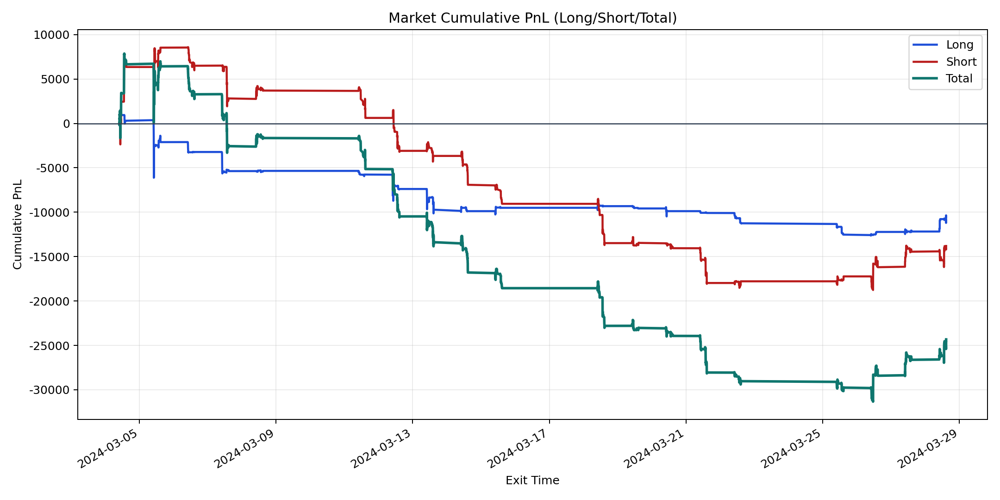
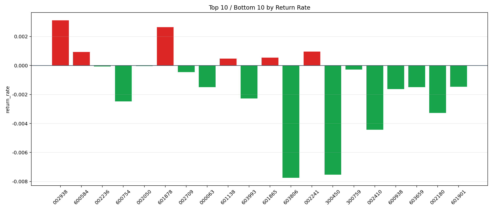

| repo_root | /home/haoranyou/data/output/alpha0.4_1w_5s_3ticks_index_filter/index_weights_300 |
|---|---|
| period_months | 1 |
| period_label | 2024-03-04_to_2024-03-28 |
| start_time | 2024-03-04 09:50:47 |
| end_time | 2024-03-28 14:45:02 |
| n_trades | 5149 |
| n_symbols | 25 |
| total_pnl | -24328.452699999903 |
| long_total_pnl | -10523.569900000019 |
| short_total_pnl | -13804.882799999885 |
| total_entry_notional | 47119870.0 |
| long_entry_notional | 14031392.0 |
| short_entry_notional | 33088478.0 |
| total_return_rate | -0.0005163098433845404 |
| long_return_rate | -0.0007500018458610534 |
| short_return_rate | -0.0004172111754430012 |
| top_symbols_by_return | ["002938", "601878", "002241", "600584", "601865", "601138", "002050", "002236", "300759", "002709"] |
| bottom_symbols_by_return | ["603806", "300450", "002410", "002180", "600754", "603993", "600938", "603659", "000063", "601901"] |

